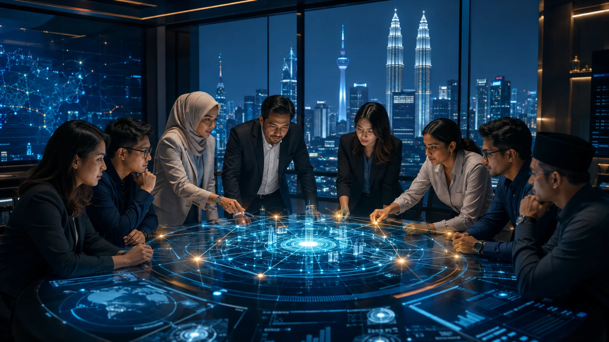

Malaysia’s Hidden Cybersecurity Advantage Is Not Technical
Malaysia still needs deeper technical cybersecurity capability, but its professionals already possess another valuable advantage: experience collaborating across cultural, linguistic and organisational differences.

Cybersecurity discussions in Malaysia usually focus on technical capability.
Do we have enough skilled professionals?
Are organisations investing in the right security platforms?
Can our universities produce enough graduates with cloud, artificial intelligence, incident response and threat-hunting expertise?
These are important questions. Malaysia still needs deeper technical capabilities, stronger cybersecurity education and more opportunities for professionals to gain practical experience.
But we may already possess another advantage that is rarely recognised.
Malaysians are accustomed to working across different cultures, languages, religions and ways of thinking.
We do it so routinely that we rarely consider it a professional capability.
In a recent Malay Mail article, The Advantage We Never Put on Our Resume, Elman Mustafa El Bakri argues that Malaysians have developed an underappreciated ability to collaborate across differences.
This may also be one of Malaysia’s hidden cybersecurity advantages.
Cybersecurity Is Not Solved by Security Teams Alone
A major cyber incident does not remain inside the Security Operations Centre.
It quickly involves infrastructure teams, application owners, legal advisers, risk managers, communications teams, senior executives, regulators, vendors and sometimes law-enforcement agencies.
Each group sees the incident differently.
The security analyst wants to contain the attack.
The infrastructure team wants to keep critical services running.
The legal team is concerned about liability and reporting obligations.
The communications team wants accurate information before making a public statement.
Business leaders want to understand the financial and operational impact.
The regulator expects the organisation to respond within the required timeframe.
Technical capability remains essential. However, the organisation’s response will depend heavily on whether these different groups can communicate, establish trust and work towards a shared objective.
Cybersecurity is technical work performed within a human system.
Strong Teams Do Not Need Everyone to Think Alike
Security teams sometimes mistake agreement for alignment.
They are not the same.
Agreement means everyone holds the same view. Alignment means people may hold different views but understand the objective and can move forward together.
A cloud engineer, security architect, auditor and business owner may disagree about how a system should be protected. Each person may be evaluating the problem through a different lens.
The engineer considers performance and maintainability.
The architect considers trust boundaries and integration risks.
The auditor considers whether the control satisfies regulatory requirements.
The business owner considers cost, customer experience and delivery timelines.
These perspectives can create tension. But when managed properly, that tension improves the decision.
The strongest architecture is rarely produced by asking everyone to think the same way. It is produced by allowing different perspectives to challenge assumptions before an attacker does.
Malaysians Already Practise This Every Day
Many Malaysian professionals switch naturally between languages, communication styles and cultural contexts.
A technical discussion may happen in English. An operational explanation may be delivered in Bahasa Malaysia. A conversation with an international vendor may require a different style from a discussion with an internal team or regulator.
This is more than language proficiency.
It is the ability to understand context, adjust communication and recognise that the same message may be interpreted differently by different people.
These capabilities are valuable in cybersecurity.
A security architect must translate technical weaknesses into business consequences.
A SOC analyst must explain an incident without overwhelming management with technical details.
A risk professional must challenge a project without turning security into an obstacle.
A CISO must communicate with engineers, executives, regulators and customers, sometimes within the same incident.
The technology may be global, but trust is still built through human interaction.
Diversity Is Not Automatically an Advantage
Having people from different backgrounds does not automatically produce stronger cybersecurity.
A diverse team can still fail if people are afraid to speak, if seniority prevents respectful disagreement or if decisions are controlled by a small familiar circle.
Diversity becomes valuable only when different perspectives are allowed to influence the outcome.
Leaders must create an environment where someone can question an assumption without being labelled difficult.
A junior analyst should be able to highlight an unusual signal.
An engineer should be able to explain why a proposed control may fail operationally.
A security architect should be able to challenge a design even when the project has already received senior management support.
A business owner should be able to question whether the proposed security requirement is proportionate to the actual risk.
This does not weaken authority. It strengthens decisions.
Many cyber incidents begin with an assumption that nobody challenged.
AI Will Make Human Collaboration More Important
Artificial intelligence will make technical knowledge easier to access.
Professionals can already use AI to explain vulnerabilities, generate code, analyse logs, draft policies and recommend security controls. Over time, some technical capabilities that once required years to develop may become available through a well-designed prompt.
But AI cannot automatically create organisational trust.
It cannot guarantee that teams will share information during an incident.
It cannot resolve disagreements between business priorities and security requirements.
It cannot ensure that someone feels safe enough to challenge a flawed decision.
It cannot unite multiple teams behind a common objective when the organisation is under pressure.
As technical capability becomes more accessible, judgement, communication and collaboration may become even more valuable.
As explored in Behind Every Line of Code: The Human Element of Cybersecurity, technology provides capability, but people transform that capability into protection.
We Should Make This Advantage Visible
Malaysian cybersecurity professionals should not treat cross-cultural collaboration as something ordinary or irrelevant to their careers.
It is a capability worth developing and communicating.
A résumé may list security certifications, technology platforms and regulatory frameworks. It should also demonstrate the ability to coordinate across business units, communicate with international teams, resolve competing priorities and influence decisions without relying entirely on authority.
These are not secondary skills.
They determine whether technical knowledge can be translated into organisational action.
Employers should recognise this when developing cybersecurity teams. Hiring should not focus exclusively on products, certifications and technical keywords.
Malaysia does not only need people who can operate security tools.
We need people who can bring engineers, business leaders, regulators and technology partners together when the organisation faces a difficult decision.
Our Advantage Is the Ability to Work Across Differences
Malaysia’s cybersecurity advantage will not come from having the most expensive tools or the largest number of certifications.
Other countries can purchase the same technology.
Attackers can access many of the same AI capabilities.
What is harder to reproduce is a workforce that has spent its entire life learning how to work across differences.
This advantage should not be exaggerated or taken for granted. Malaysia still faces workplace divisions, communication barriers and organisational cultures where constructive disagreement is sometimes discouraged.
But the foundation already exists.
If we combine strong technical capability with our ability to communicate across cultures, integrate different perspectives and build trust around a shared objective, Malaysia can develop cybersecurity teams that are not only technically competent but organisationally effective.
The future of cybersecurity will not be secured by technology alone.
It will be secured by people who can think differently, work together and make better decisions when trust is under pressure.
That may be the most valuable capability we never thought to put on our résumé.
Question assumptions. Share knowledge. Build trust.
Share this article
If this perspective was useful, share it with your network.